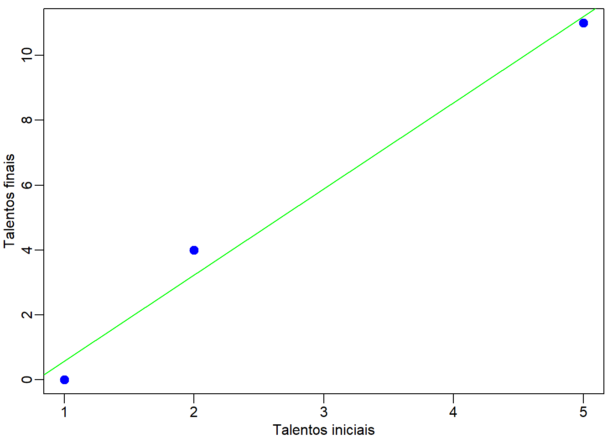
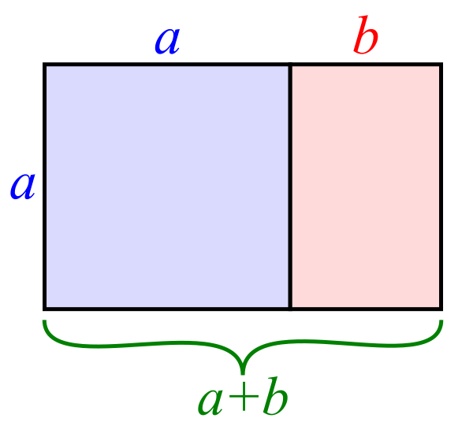
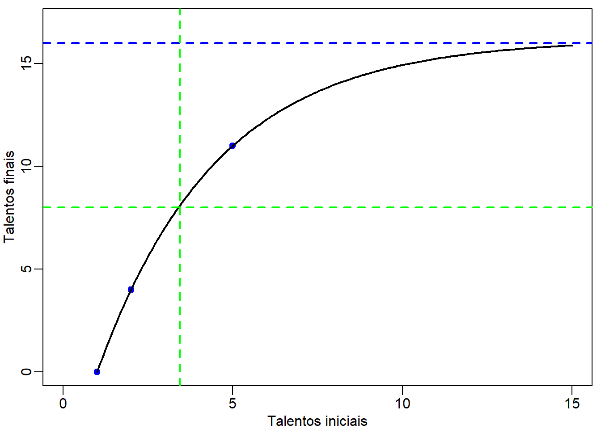
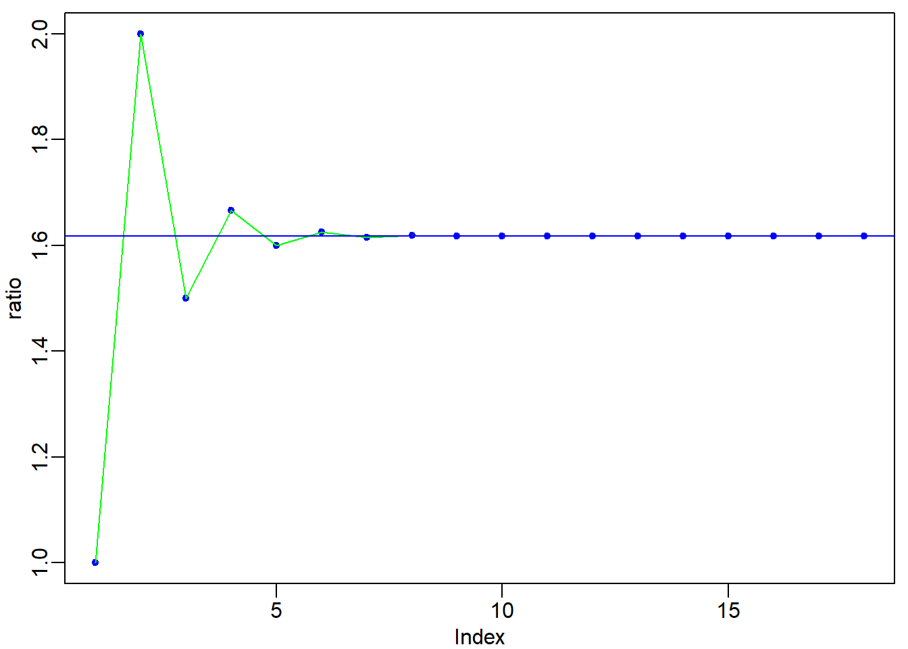

Reproduzo, abaixo, o texto retirado do Evangelho Segundo o Espiritismo, Capítulo XVI, Parágrafo 6:
“O Senhor age como um homem que, tendo de fazer longa viagem fora do seu país, chamou seus servidores e lhes entregou seus bens. – Depois de dar cinco talentos a um, dois a outro e um a outro, a cada um segundo a sua capacidade, partiu imediatamente. – Então, o que recebeu cinco talentos foi-se, negociou com aquele dinheiro e ganhou cinco outros. – O que recebera dois ganhou, do mesmo modo, outros tantos. Mas o que apenas recebera um cavou um buraco na terra e aí escondeu o dinheiro de seu amo. – Passado longo tempo, o amo daqueles servidores voltou e os chamou a contas. – Veio o que recebera cinco talentos e lhe apresentou outros cinco, dizendo: Senhor, entregaste-me cinco talentos; aqui estão, além desses, mais cinco que ganhei. – Respondeu-lhe o amo: Servidor bom e fiel; pois que foste fiel em pouca coisa, confiar-te-ei muitas outras; compartilha da alegria do teu senhor. – O que recebera dois talentos apresentou-se a seu turno e lhe disse: Senhor, entregaste-me dois talentos; aqui estão, além desses, dois outros que ganhei. – O amo lhe respondeu: Bom e fiel servidor; pois que foste fiel em pouca coisa, confiar-te-ei muitas outras; compartilha da alegria do teu senhor. – Veio em seguida o que recebeu apenas um talento e disse: Senhor, sei que és homem severo, que ceifas onde não semeaste e colhes de onde nada puseste; – por isso, como te temia, escondi o teu talento na terra; aqui o tens: restituo o que te pertence. – O homem, porém, lhe respondeu: Servidor mau e preguiçoso; se sabias que ceifo onde não semeei e que colho onde nada pus – devias pôr o meu dinheiro nas mãos dos banqueiros, a fim de que, regressando, eu retirasse com juros o que me pertence. – Tirem-lhe, pois, o talento que está com ele e dêem-no ao que tem dez talentos; – porquanto, dar-se-á a todos os que já têm e esses ficarão cumulados de bens; quanto àquele que nada tem, tirar-se-lhe-á mesmo o que pareça ter; e seja esse servidor inútil lançado nas trevas exteriores, onde haverá prantos e ranger de dentes. (S. MATEUS, 25:14 a 30.)”
Introdução
Neste texto, vamos fazer duas interpretaões para o termo ” talento “. Uma com um viés materialista, mas, não menos importante, e outra, mais abrangente, que se refere aos dons que recebemos de Deus ao encarnarmos. Na realidade, os dois pontos de vista se mesclam e, aqui, sua separação tem apenas um enfoque didático. Perceberemos que obter lucros com o uso de nossa inteligência e saúde não é imoral. Pelo contrário, essa é a forma mais sensata de utilizarmos os talendos recebidos de Deus.
Empreendedorismo
Investir num banco sempre foi considerado um investimento seguro. Esse é a forma mais branda de investimento. O Senhor diz: “devias pôr o meu dinheiro nas mãos dos banqueiros, a fim de que, regressando, eu retirasse com juros o que me pertence.”
Nossos talentos sempre devem ser usados para fins produtivos. Um servo inútil e preguiçoso deverá ser lançado às trevas.
Os dois primeiros servos se arriscaram ao não investir num banco os talentos recebidos. Eles enfrentam as incertezas do mercado com espírito empreendedor. Então, o Senhor os retribui deixando que ficassem com todos talentos. Além disso, elogia-os e compartilha de sua alegria. Em outras palavras, um empreendedor é um bom servidor. Ele usa seus dons com plenitude se concentrando, sempre, nas necessidades dos consumidores.
O empreendedorismo não pode ser confundido com a ganância. A ganância não é só do homem rico, mas de todo aquele que deseja insaciavelmente os ganhos materiais.
Em nome da igualdade social e da redistribuição de renda condenam os lucros. Mas não foi assim que o Senhor agiu. Ele não deu a mesma quantidade de talentos aos seus servos. E ao final, não teve nenhuma compaixão com aquele que recebeu apenas um talento.
A desigualdade é um fato. Porém, um sistema justo é aquele que permite que cada um, por meio de seus esforços, possa utilizar seus talentos com plenitude. Será que o mal servo, sabendo daquilo que o Senhor fez ao retornar, teria se comportado da mesma forma, caso tivesse uma nova oportunidade? Sim, por que ele é o mal. O mal está ligado à inveja, que tem como causa a baixa auto-estima, ou seja, a falta de fé em si mesmo. Uma consequência disso é o vitimismo. Observa que o mal servo foi o último a ser consultado a respeito dos talentos recebidos. Ele poderia ter pensado melhor ao responder. Porém, ao ser indagado, age como vítima e ainda acusa o Senhor de ser severo e que o temia. Na verdade, não foi só a preguiça que causou a ira do Senhor, mas a falta de arrependimento.
Jesus ensina que a economia não é um jogo de soma zero. O Senhor deixa um total de 8 talentos e quando retorna encontra 15. Por exemplo, se o primeiro servo tivesse prejudicado alguém para duplicar seus talentos, o Senhor não o teria elogiado.
Para concluir, devemos abandonar a ideia de que não há mais trabalho a ser feito. Por definição, a necessidade de trabalho é infinita e sempre teremos a oportunide de aplicarmos nossos talentos no bem da humanidade.
Oração: Para pedir um conselho
Evangelho segundo o espiritismo (Allan Kardec), Capítulo XXVIII, Coletânea de preces espíritas, Preces por aquele mesmo que ora, Para pedir um conselho
” Prefácio: Quando estamos indecisos sobre o fazer ou não fazer uma coisa, devemos antes de tudo propor a nós mesmos as questões seguintes:
\(1^o\) - Aquilo que eu hesito em fazer pode acarretar qualquer prejuízo a outrem?
\(2^o\) - Pode ser proveitoso a alguém?
\(3^o\) - Se agissem assim comigo, ficaria eu satisfeito?
Se o que pensamos fazer, somente a nós interessa, lícito nos é pesar as vantagens e os inconvenientes pessoais que nos possam advir.
Se interessa a outrem e se, resultando em bem para um, redundará em mal para outro, cumpre, igualmente, pesemos a soma de bem ou de mal que se produzirá, para nos decidirmos a agir, ou a abster-nos.
Enfim, mesmo se tratando das melhores coisas, importa ainda consideremos a oportunidade e as circunstâncias concomitantes, porquanto uma coisa boa, em si mesma, pode dar maus resultados em mãos inábeis, se não for conduzida com prudência e circunspecção. Antes de empreendê-la, convém consultemos as nossas forças e meios de execução.
Em todos os casos, sempre podemos solicitar a assistência dos nossos Espíritos protetores, lembrados desta sábia advertência: Na dúvida, abstém-te. (Cap. XXVIII, item 38.)
Prece: – Em nome de Deus Todo-Poderoso, inspirai-me, bons Espíritos que me protegeis, a melhor resolução a ser tomada na incerteza em que me encontro. Encaminhai meu pensamento para o bem e livrai-me da influência dos que tentarem transviar-me.”
Sobre o mérito
Evangelho segundo o espiritismo (Allan Kardec), Capítulo III, Há muitas moradas na casa de meu Pai, Instruções dos espíritos - Mundos inferiores e mundos superiores, item 10 (Resumo do ensino de todos os Espíritos superiores.).
“Nesses mundos venturosos, as relações, sempre amistosas entre os povos, jamais são perturbadas pela ambição, da parte de qualquer deles, de escravizar o seu vizinho, nem pela guerra que daí decorre. Não há senhores, nem escravos, nem privilegiados pelo nascimento; só a superioridade moral e intelectual estabelece diferença entre as condições e dá a supremacia. A autoridade merece o respeito de todos, porque somente ao mérito é conferida e se exerce sempre com justiça. O homem não procura elevar-se acima do homem, mas acima de si mesmo, aperfeiçoando-se. Seu objetivo é galgar à categoria dos Espíritos puros, não lhe constituindo um tormento esse desejo, porém, uma ambição nobre, que o induz a estudar com ardor para igualar-se a eles. Lá, todos os sentimentos delicados e elevados da natureza humana se acham engrandecidos e purificados; desconhecem-se os ódios, os mesquinhos ciúmes, as baixas cobiças da inveja; um laço de amor e fraternidade prende uns aos outros todos os homens, ajudando os mais fortes aos mais fracos. Possuem bens, em maior ou menor quantidade, conforme os tenham adquirido, mais ou menos por meio da inteligência; ninguém, todavia, sofre, por lhe faltar o necessário, uma vez que ninguém se acha em expiação. Numa palavra: o mal, nesses mundos, não existe.”
O dom da graça de Deus
A primeira coisa a saber é que o Senhor representa Deus e os seus servidores somos nós nas várias etapas de nosso desenvolvimento e crescimento em direção ao bem. Os talentos são os bens que Deus nos entrega, representam os recursos que estarão disponíveis para nós a cada nova reecarnação, como saúde, inteligência, a família em que nascemos. “Passado longo tempo, o amo daqueles servidores voltou e os chamou a conta” significa que, ao final de nossa vida terrena, prestaremos contas daquilo que fizemos com os talentos colocados sob o nosso cuidado.
O Senhor entregou 5, 2 e 1 talentos aos seus servidores, os quais chamaremos, respectivamente, de A, B e C. Com isso, Deus mostra que conhece a todos nós e entrega aquilo que, de fato, precisamos para evoluir, ou seja, “a cada um segundo a sua capacidade” . Por exemplo, Deus enfatiza a responsabilidade do servidor A, não somente pela quantidade de talentos que lhe é entrege, mas também por ser o primeiro a recebe-los. Ele também sabe que C é um servidor relapso e, por isso, lhe entrega apenas um talento.
Deus cuida de sua grande obra e zela para que seus mundos se tornem cada vez mais evoluídos, independentemente dos que não queiram, num dado momento, assumir quaisquer compromissos com ela. Isso fica implicito quando diz, ao servidor C, que “devias pôr o meu dinheiro nas mãos dos banqueiros, a fim de que, regressando, eu retirasse com juros o que me pertence.”. Mesmo assim, em sua infinita bondade, dá oportunidades ou talentos para todos, esperando que os mais desatentos possam despertar e, então, caminhar para o bem. Investir apenas um talento num servidor preguiçoso pode parecer pouco, mas não é. Basta ver que o servidor C teme perder o talento que lhe foi emprestado e o enterra. Na realidade, esta parábola trata das riquezas materiais também. Nesse sentido, um talento seria uma pequena forturna e o servidor C, seu administrador, representa o mau rico, o avarento.
Em nosso mundo, o servidor C representa os omissos. A questão 642 do Livro dos Espíritos trata disso, afirmando que, não basta não fazer o mal, é preciso fazer o bem, e que cada um será responsável pelo mal ocorrido por causa do bem que deixou de fazer. Por exemplo, todos sabiam que colocar uma estrela no peito dos judeus durante a segunda guerra mundial era errado. Apesar disso, a grande maioria não se importou, pois, aparentemente, não as afetava.
Ao servidor C é dito: “quanto àquele que nada tem, tirar-se-lhe-á mesmo o que pareça ter”, indicando que, de fato, nada temos. Parece que temos, mas, os talentos nos são emprestados e devemos honrá–los, fazendo o bem quando possível. Na dúvida do que fazer, lembre-se “amai-vos uns aos outros”. Ou então seremos lançados “nas trevas exteriores, onde haverá prantos e ranger de dentes”.
O servidor B é um servidor mais bem preparado que C, mas ainda aquém de A. É um servidor que está, digamos, no caminho correto, fazendo um bom uso dos seus talentos, mas ainda precisa ser mais experimentado, testado, para se ter certeza de que não cairá em tentações. Podemos fazer uma analogia com o casamento. É uma decisão muito importante em nossas vidas, pois, precisaremos conviver, muito intimamente, com outra pessoa. O servidor B é o recém casado em lua de mel. Mas, continuando firme em seus propósitos, receberá maior confiança do Senhor e, consequentemente, mais talentos. Entretanto, como todo casamento, ainda passará por grandes provações.
O servidor A já foi bastante experimentado, já passou por muitas bodas, ou seja, o seu Senhor confia muito nele. Além de receber a maior quantidade de talentos, é ele quem fica com o talendo do servidor C. A esse servidor diz o Senhor: “Tirem-lhe, pois, o talento que está com ele e deem-no ao que tem dez talentos; porquanto, dar-se-á a todos os que já têm e esses ficarão cumulados de bens”.
Sistemas físicos
Podemos fazer algumas analogias dessa parábola com alguns sistemas físicos complexos. Por exemplo, o Aeroporto de Guarulhos pode ser comparado ao servidor A e o Aeroporto de Maringá ao servidor B. A ideia que usaremos está compreendida nos dizeres: “dar-se-á a todos os que já têm e esses ficarão cumulados de bens”. Grandes aeroportos tem uma enorme quantidade de voos diários e é comum que, por exemplo, alguém que saía de Maringá - PR para Campo Grande - MS passe primeiro por um grande aeroporto.
Caso um pequeno aeroporto não tenha passageiros suficientes para que uma companhia aerea mantenha um voo diário, este voo poderá ser transferido para um aeroporto maior mais próximo. Um aeroporto grande tende a receber cada vez mais voos, enquanto um aeroporto pequeno tende a perder os voos que tem.
É comum na natureza termos esse tipo de comportamento em que poucos pontos, como por exemplo os grandes aeroportos, tem muitas conexões e muitos outros, os pequenos aeroportos, tem poucas. As conexões em redes sociais também tem esse comportamento, ou seja, há poucas pessoas com muitas conexões e muitas outras com poucas. O cérebro humano também apresenta alguns pontos com muitas conexões e muitos outros com poucas. Uma consequência disso é que um acidente vascular numa região com muitas conexões pode causar grandes sequelas. Esse comportamento pode explicar a frase “dinheiro faz dinheiro”.
Análise Matemática
O que faremos aqui é apenas uma brincadeira com os números citados por Jesus em sua parábola.
A proporção áurea
O número áureo (também conhecido como razão áurea ou golden ratio, em inglês) é uma proporção encontrada em muitos aspectos da natureza, da arte e da arquitetura. Ele também tem sido associado à beleza e harmonia na arte e no design, devido à sua presença em proporções estéticas agradáveis.
Os números citados por Jesus
Os números citados por Jesus em sua parábola, representando os talentos entregues aos servidores do Senhor (1, 2 e 5), nos dá, em uma combinação algébrica, o valor exato da proporção áurea, ou seja,
\[ \text{Proporção áurea} = \frac{1+\sqrt{5}}{2} \approx 1.618034 \]

A razão áurea é definida como a razão entre dois segmentos de reta, em que o segmento maior \((a+b)\) está para o segmento menor ( \(a\) ) assim como o segmento menor ( \(a\) ) está para o segmento restante (\(b\)):
\[(a+b)/a = a/b \]
Essa proporção pode ser simplificada, por meio de álgebra, para:
\[a/b = (1 + \sqrt{5} )/2\]
Em que \((1 + \sqrt{5})/2\) é o valor numérico da razão áurea. Este número é aproximadamente igual a 1,6180339887.
Demonstração de \(\frac{1+\sqrt{5}}{2}\)
Podemos chegar na expressão \(a/b = (1 + \sqrt{5})/2\) a partir de \((a+b)/a = a/b\) usando manipulação algébrica.
Começamos com a expressão (a+b)/a = a/b e a expandimos:
\[ \frac{ (a+b)}{a} = \frac{a}{b}\]
ou seja,
\[\frac{a}{a} + \frac{b}{a} = \frac{a}{b}\] ou ainda
\[ 1 + \frac{b}{a} = \frac{a}{b} \]
subtraindo \(b/a\) de ambos os lados
\[ 1 = \frac{a}{b} - \frac{b}{a} = \frac{a^2 - b^2}{ab} \]
Em seguida, multiplicamos os dois lados por \(ab\):
\[ ab = a^2 - b^2 \]
Explicitando \(a^2\):
\[ a^2 = ab + b^2 \]
Dividindo ambos os lados por \(b^2\):
\[ \frac{a^2}{b^2} = 1 + \frac{a}{b} \]
Substituindo \(a/b\) por \(x\), obtemos a equação quadrática:
\[ x^2 = x + 1 \]
ou
\[ x^2 -x - 1 = 0 \]
que pode ser resolvida pela conhecida expressão
\[ x = \frac{-b \pm \sqrt{b^2 - 4 a c} }{2a} \]
Neste caso temos que \(a=1\) , \(b=-1\), e \(c=-1\). Então, a solução positiva para a expressão \(x^2-x-1=0\) é
\[ x = \frac{-(-1) \pm \sqrt{(-1)^2 - 4 (1) (-1)} }{2 (1)} \]
ou
\[ x = \frac{1 + \sqrt{5} }{2} \]
Portanto, a partir da manipulação algébrica da expressão original \((a+b)/a = a/b\), chegamos à expressão \(a/b = (1 + \sqrt{5})/2\), que é a definição da razão áurea.
Modelo de regressão assintótico
Queremos construir uma função que leve os valores iniciais de talentos 5, 2 e 1, aos valores finais 11, 4 e 0, respectivamente aos servidores A, B e C. Estes valores representam a quantidade de talentos que cada servidor recebeu e com quanto ficou após a chegada do Senhor.
A relação entre estes valores não é linear como podemos ver abaixo.
Precisamos de um modelo não linear. Queremos que esse modelo tenha uma assintota horizontal quando a quantidade de talentos iniciais, a qual chamaremos de \(x\), tende a infinito. Essa assintota é um valor limite. Apesar de receber infinitos talentos, o indivíduo não pode ultrapassar um certo valor, que pode ser entendido como o Senhor, indicando que conforme evoluímos nos aproximamos da perfeição (assintota) mas nunca a atingiremos. Isso é importante, pois sabemos que há somente um único Deus.
Para achar o valor dessa assintota, pegamos o valor que o servidor A atingiu com seus esforços, ou seja, 10 talentos, e multiplicamos pela proporção áurea, obtendo 16.1803399.
O nosso modelo não linear será dado pela expressão:
\[ y(x) = \phi_1 * \left( 1 - e^{-\phi_2 * (x-\phi_3)} \right) \] em que \(\phi_1\) é a assintota quando \(x \to \infty\), \(\phi_2\) corresponde a meia vida \(t_{0.5}= ln(2) / \phi_2\), e \(\phi_3\) é o valor de \(x\) quando \(y=0\).
Dado que \(\phi_1 =\) 16.1803399, e \(\phi_3 = 1\), precisamos estimar \(\phi_2\). Abaixo, deixaremos os códigos em R.
# Definir os dados de entrada
x <- c(1,2,5)
y <- c(0,4,11)
# Proporção áuria
gold <- (1+sqrt(5))/2
#
model_function <- function(a, x) {
gold * 10 * (1 - exp(-a * (x-1)))
}
# Ajuste do modelo usando a função nls
fit <- nls(y ~ model_function(a, x),
start = list(a = 0.8))Vamos gerar o nosso gráfico com os pontos e a função estimada.

As estimativas com duas casas decimais para os valores de talentos finais são:
round(predict(fit, data.frame(x)),2)[1] 0.00 4.01 11.00Sequência de Fibonacci e a razão áurea
Os primeiros números que formam a sequência de Fibonacci são:
\[0,1, 1, 2, 3, 5, 8, 13, 21, 34, 55, 89, 144, 233, 377, 610, 987, 1597, 2584, \cdots\] Esta sequência é definida como segue:
\[F_n = F_{n-1} + F_{n-2} \] tendo como valores iniciais \(F_1 = 0\) e \(F_2 = 1\).
Podemos definir
\[ \text{Razão áurea}= \lim_{x \to \infty} \left( \frac{F_{n+1}}{F_n} \right) = \frac{1+ \sqrt{5}}{2} = 1.618034 \] Podemos ver no gráfico abaixo.
